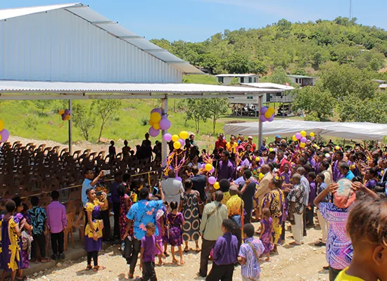

September 2025
Popondetta Crusade
Popondetta · Oro Province
A chapter in our ministry’s Gospel outreach and connection with communities in Oro Province.
Voice of Truth Incorporated
Beyond our walls
Crusades, village visits and shared gatherings are part of our ministry journey across Papua New Guinea.
September 2025
Popondetta · Oro Province
A chapter in our ministry’s Gospel outreach and connection with communities in Oro Province.
November 2025
Baruni Village · NCD
A community gathering centred on faith, prayer and the proclamation of the Gospel in Baruni.
13–17 September 2026
Kamkumung, Lae · Morobe Province
The ministry’s scheduled crusade programme for Lae. Contact our team for ministry updates and further information.
Programme archiveFellowship & practical care
Our visits to the Minimum Security Unit at Bomana Correctional Institution have included a combined fellowship service and a second visit with sport, shared activities and encouragement.
The fun day in February 2026 created time for connection, laughter and fellowship with the men at the unit.
Connect with our outreach teamCommunity partnership
Bringing people together around unity, shared responsibility and the development of Baruni and Tatana.
Our next generation
Encouraging young people through fellowship, mentorship, leadership development and empowerment activities.
A shared vision
30 May 2025 · APEC Haus
The banquet programme brought the vision for the Rehabilitation and Empowerment Centre before potential supporters and community partners.
Explore the Centre projectChristmas Day outreach initiative
A community declaration of “Baruni for Jesus”, expressing our faith through a shared witness in the village.
Contact our team for the current programme and arrangements.
Ministry life
Moments from our ministry gatherings.


